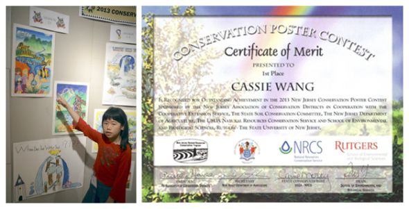

传统绘画过时了么
前几天我看了<＜锵锵三人行＞>，著名画家陈丹青说：＂用笔画画的方式早就应该被淘汰了。＂但我不完全同意他的观点。
传统绘画是用手、用笔画出来的。数字绘画是在电脑上用各种工具、软件制作的。学习传统绘画会用很多年才画得很好，学习数字绘画要快一些。用于传统绘画的各种材料也会很贵，比如画笔、画布、油彩等。修改也很困难，尤其是中国的水墨画、水彩。但原作富有质感，尤其是油画。画出来就是世界上唯一的，所以画得好的作品就很珍贵。而数字绘画，可以随便打印多少张都是一模一样的，所以数字绘画就不怎么珍贵。
我觉得传统绘画和数字绘画谁都不能取代谁。各有各的好处。在制作动画片之类的工业化产品上，数字绘画有绝对的优势。比如尺寸随意、画面也可以重新组合。但从欣赏和收藏的角度，传统绘画永远不可能失去它的艺术价值。陈丹青先生的观点未免偏颇。
就这么简单—读王丹玫小朋友的文章
文 刘莎伦
在科技日益发达的今天，很多人放弃需要辛苦练就很多年的绘画，选择用电脑和多媒体作图。这些年来，越来越多的文人、学者、艺术家加入深入探讨这个议题的热潮中，各述己见。但是，莎伦画院一位仅仅９岁的孩子，生长在美国，以英语为母语，却能够用自学的中文，三两拨千斤，三言两语就道清了这个热烈的议题。原来，就是这么简单！在一个小小的清澈的心灵里，很多困难的问题，其实并不复杂。
当我看到这篇文章时，非常感动。她不仅仅是一位喜爱画画的孩子，也不仅仅是每个周末，在课室外走廊中迎面而来的一张可爱动人的笑脸，不仅仅是一声＂嗨＂，那样的亲切贴心……而是在闪烁的明眸后面，那一份认真、执着、关注和思考，甚至超越过很多高中生（现在的高中生兴趣不在此，不见得会有严肃认真的思想。），一定会是个大有作为的孩子！回眸望去，我并不知道，在众多莎伦孩子的笑脸中，她属于哪一张。但，她一定会脱颖而出！
还有，她一定有合时合宜引导和帮助她的智慧的好家长。谢谢你们，让我们成为孩子成长中的老师！